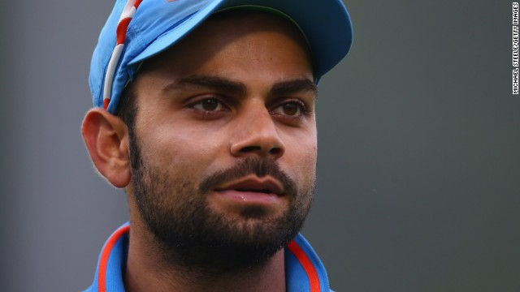

Indian Cricketers
Virat kohli
Virat Kohli is an Indian international cricketer who currently captains the India national team. A right-handed top-order batsman, Kohli is regarded as one of the best batsmen in the world. He plays for Royal Challengers Bangalore in the Indian Premier League,

- Competition
- Test
- ODI
- T20
- FC
MS Dhoni
MS DhoniMahendra Singh Dhoni is an Indian international cricketer who captained the Indian national team in limited-overs formats from 2007 to 2016 and in Test cricket from 2008 to 2014. He is referred to by the media as Thala called affectionately by the CSK fans in Tamilnadu

K.L Rahul
Kannanur Lokesh Rahul, commonly known as KL Rahul and also as Lokesh Rahul, is an Indian cricketer who plays as a top order right-handed batsman and an occasional wicket-keeper also. He plays for India internationally, Karnataka in domestic circuit and Kings XI Punjab in the Indian Premier League

Suresh Raina
Suresh Kumar Raina is an Indian international cricketer. An aggressive left-handed middle-order batsman and an occasional off-spin bowler, he is also regarded as one of the best fielders in world cricket. He plays for Uttar Pradesh in all forms of domestic cricket

Hardik Pandya
Hardik Himanshu Pandya is an Indian international cricketer who plays for Baroda in domestic cricket and Mumbai Indians in the Indian Premier League. He is an all-rounder who bats right-handed and bowls right-arm fast-medium. He is the younger brother of Krunal Pandya

Ravichandran_Ashwin
MS DhoniMahendra Singh Dhoni is an Indian international cricketer who captained the Indian national team in limited-overs formats from 2007 to 2016 and in Test cricket from 2008 to 2014. He is referred to by the media as Thala called affectionately by the CSK fans in Tamilnadu